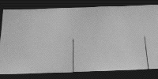
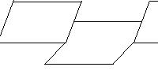
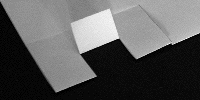
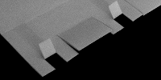
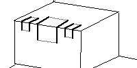
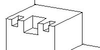

Fractal Folds Lab Procedure
Cantor Middle Thirds Set
First fold and cut

Second fold

Another cut and fold

The last cut and fold

Fold in the opposite direction

Reverse two levels of folds

Return to
PaperFolding Lab Procedure
.